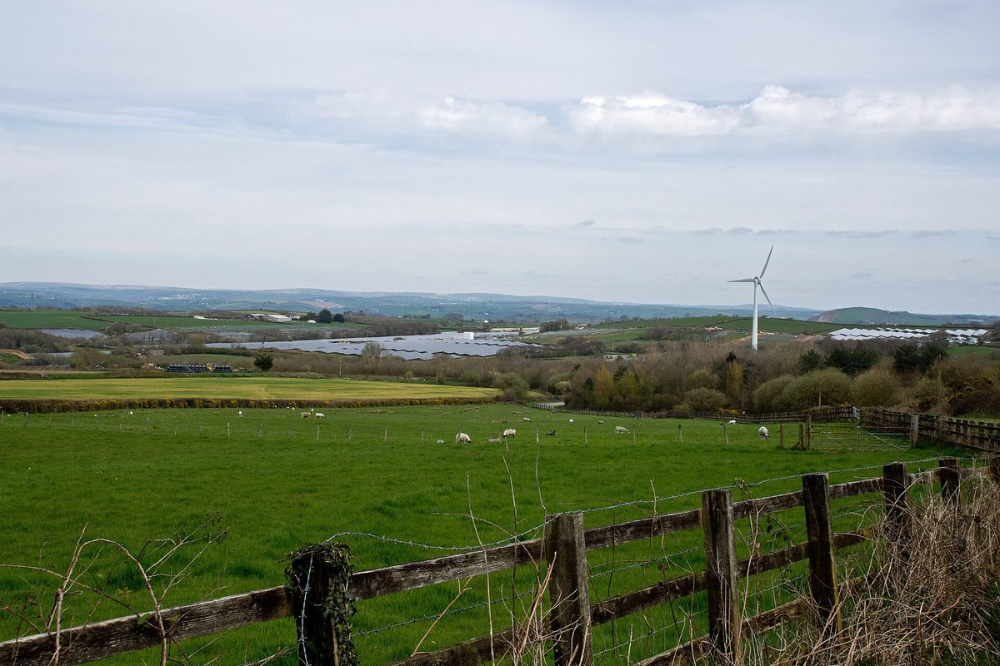

영국 최대 공동체 소유 태양광 '데릴워터', 배전망 회사가 넉 달 발전 막아 재정 위기…조합원 9,500명 협동조합

북데번 40MW 단지, 변전소 변압기 차단 여파로 5월부터 여름 내내 멈춰…배전망에 연결된 작은 발전소는 출력제한 보상도 못 받아
영국 잉글랜드 북데번의 40MW 규모 데릴워터(Derril Water) 태양광단지가 지역 배전망 회사의 출력 차단으로 여름 넉 달 동안 전기를 만들지 못해 재정 위기에 놓였다. 조합원 9,500명이 소유한 협동조합 단지로 영국의 공동체 소유 태양광 가운데 가장 크며, 배전망 회사 내셔널그리드 일렉트리시티 디스트리뷰션(NGED)은 2026년 5월 예고 없이 출력을 막았다. 국가전력계통운영기관(NESO)이 여름철 태양광·풍력 증가와 수요 감소로 송전망 전압이 지나치게 오를 것을 우려해 송전망과 배전망을 잇는 앨버디스콧 변전소의 초대형 변압기를 끄게 했고, NGED는 앨버디스콧~콘월 인디언퀸스 선로의 과열 위험을 안게 된 데다 데번의 전압을 받쳐 주던 랭기지 발전소는 정비에 들어갔고 대체 설비도 제때 오지 않았다. 차단 지시는 다른 태양광단지 여러 곳에도 내려졌고 에코트리시티(Ecotricity)의 골즈워디 풍력단지와 벌크워디 태양광단지도 출력이 제한됐는데, 송전망에 직접 연결된 대형 재생에너지 사업은 출력을 줄이면 보상금을 받아 2024년 4월부터 한 회계연도에만 그 총액이 27억 파운드에 이른 반면 배전망에 연결된 작은 발전소는 보상을 받지 못한다. 단지를 운영하는 공동체에너지 단체 커뮤니티스 포 리뉴어블스(Communities for Renewables)는 망 보강이 예정보다 늦어져 데릴워터로서는 "이보다 나쁜 시점이 없었다"며 미리 알려 주지도 않았다고 지적했고, 7월 조합원들에게는 망 운영사들이 2023년부터 북데번의 전압 문제를 알고 있었다고 알렸다. NGED 대변인은 검토한 대안들이 해당 기간 안에 적합하지 않다고 판단됐다고 해명했다.
시민에너지 관점
조합원 9,500명이 돈을 모은 40MW 발전소도 계통 운영사의 결정 하나로 넉 달 수입이 끊겼고, 같은 사정으로 멈춘 송전망 연결 대형 단지는 보상을 받는데 배전망에 붙은 시민 발전소는 아무것도 받지 못했다. 망을 지키려면 출력제한은 피할 수 없다는 반론이 나올 수 있지만, 문제는 제한 자체보다 그 손실을 누가 지느냐이며 독일은 망 사정으로 재생에너지 출력을 줄이면 망 운영자가 발전사업자의 손실을 보상하도록 법에 정해 두었다. 다른 발전 자산으로 손실을 메울 수 있는 대기업과 달리 시민·지역 소유 발전소는 한 번의 차단에도 흔들리므로, 계통 계획의 처음부터 지역 공동체를 동반자로 넣어야 수천 명의 출자가 지켜진다. 국내에서도 제주와 호남을 중심으로 출력제어가 늘고 있는 만큼 마을·협동조합 발전소에 대한 사전 통보와 손실 보상 기준부터 법으로 마련해야 한다.
출처: 디 이콜로지스트(The Ecologist) 2026-10-26 Simon Pirani 원문 보기
英国最大の地域共同所有太陽光「デリルウォーター」、配電会社が4か月発電を止め財政危機…組合員9,500人の協同組合
北デボンの40MW発電所、変電所の変圧器停止のあおりで5月から夏の間停止…配電網につながる小規模発電所は出力抑制の補償も受けられず
英国イングランド北デボンにある40MWのデリルウォーター（Derril Water）太陽光発電所が、地域の配電会社による出力停止で夏の4か月間発電できず、財政危機に陥った。組合員9,500人が所有する協同組合の発電所で、英国の地域共同所有の太陽光としては最大規模だが、配電会社ナショナル・グリッド・エレクトリシティ・ディストリビューション（NGED）は2026年5月、予告なしに出力を止めた。国の電力系統運用機関（NESO）が、夏場の太陽光・風力の増加と需要の減少で送電網の電圧が上がりすぎることを懸念し、送電網と配電網をつなぐアルバーディスコット変電所の超大型変圧器を止めさせたことで、NGEDはアルバーディスコット～コーンウォールのインディアンクイーンズ間の送電線が過熱するおそれを抱えた。加えて、デボンの電圧を支えていたランゲージ発電所は点検で止まり、代わりの設備も期限までに届かなかった。停止の指示はほかの複数の太陽光発電所にも出され、エコトリシティ（Ecotricity）のゴールズワーシー風力発電所とバルクワーシー太陽光発電所も出力を抑えられたが、送電網に直接つながる大規模再エネ事業は出力を抑えると補償金を受け取り、その総額は2024年4月からの1会計年度だけで27億ポンドに達した一方、配電網につながる小規模発電所は補償を受けられない。発電所を運営する地域エネルギー団体コミュニティーズ・フォー・リニューアブルズ（Communities for Renewables）は、送配電網の増強が予定より遅れ、デリルウォーターにとって「これ以上悪い時期はなかった」と述べ、事前の連絡もなかったと指摘したうえ、7月には組合員に対し、系統運用会社は2023年から北デボンの電圧問題を把握していたと伝えた。NGEDの広報担当者は、検討した代替策は該当期間内には適さないと判断されたと説明した。
市民エネルギーの視点
組合員9,500人が資金を出し合った40MWの発電所でも、系統運用会社の判断一つで4か月の収入が途絶え、同じ事情で止まった送電網直結の大規模発電所は補償を受けたのに、配電網につながる市民の発電所は何も受け取れなかった。系統を守るには出力抑制は避けられないという反論もあるだろうが、問題は抑制そのものより損失を誰が負うかであり、ドイツは系統の事情で再エネの出力を抑えた場合、系統運用者が発電事業者の損失を補償するよう法で定めている。ほかの発電資産で損失を埋められる大企業と違い、市民・地域所有の発電所は一度の停止でも揺らぐため、系統計画の最初から地域コミュニティーをパートナーとして迎えてこそ、数千人の出資が守られる。韓国でも済州と湖南を中心に出力制御が増えている以上、村や協同組合の発電所への事前通知と損失補償の基準を、まず法で整えるべきだ。
出典: ジ・エコロジスト（The Ecologist） 2026-10-26 サイモン・ピラーニ（Simon Pirani） 原文を読む
英国最大社区所有光伏电站"德里尔沃特"被配电公司停发四个月陷入财务危机，合作社社员9,500名
北德文40MW电站受变电站变压器停运影响，自5月起整个夏天停发；接入配电网的小型电站连限电补偿也拿不到
英国英格兰北德文的40MW德里尔沃特（Derril Water）光伏电站，因当地配电公司切断出力，整个夏天四个月无法发电，陷入财务危机。该电站由拥有9,500名社员的合作社所有，是英国规模最大的社区所有光伏项目，而配电公司国家电网配电公司（NGED）在2026年5月未经预告就切断了其出力。英国国家能源系统运营机构（NESO）担心夏季光伏和风电增加、用电需求下降会使输电网电压过高，下令关闭连接输电网和配电网的阿尔弗迪斯科特变电站超大型变压器，NGED由此面临阿尔弗迪斯科特至康沃尔印第安昆斯线路过热的风险；与此同时，为德文电网提供电压支撑的兰盖奇电厂正在检修，替代设备也未能按时到位。停发指令还下达给了其他多座光伏电站，Ecotricity公司的高尔斯沃西风电场和巴尔克沃西光伏电站也被限制出力；直接接入输电网的大型可再生能源项目在被限电时可获得补偿，仅2024年4月起的一个财政年度补偿总额就达27亿英镑，而接入配电网的小型电站却得不到补偿。负责运营电站的社区能源组织Communities for Renewables指出，电网升级晚于计划，对德里尔沃特来说"没有比这更糟的时机"，而且事先也没有通知；该组织7月还告知社员，电网运营商自2023年起就已知道北德文的电压问题。NGED发言人解释说，所评估的替代方案被认为"在相关时间内不合适"。
市民能源视角
即便是9,500名社员集资建起的40MW电站，也会因电网运营商的一个决定而断收四个月；因同样原因停发的输电网大型电站能拿到补偿，接入配电网的市民电站却一无所得。有人会说，为保护电网，限电不可避免；但问题不在于限电本身，而在于损失由谁承担——德国就以法律规定，因电网原因削减可再生能源出力时，由电网运营者补偿发电企业的损失。与能用其他发电资产弥补损失的大企业不同，市民和地方所有的电站一次停发就可能动摇根基，只有从电网规划之初就把地方社区当作伙伴，数千人的出资才能得到保护。韩国济州和湖南地区的出力控制也在增加，应当首先以法律形式建立对村庄和合作社电站的事先通知与损失补偿标准。
来源: 《生态学人》（The Ecologist） 2026-10-26 西蒙·皮拉尼（Simon Pirani） 查看原文
Britain's largest community-owned solar farm, Derril Water, in financial crisis after grid company halts output for four months; co-op has 9,500 members
The 40 MW north Devon farm sat idle through the summer from May after a substation transformer was switched off; small generators on distribution grids get no curtailment compensation
The 40 MW Derril Water solar farm in north Devon, England, has been left in financial difficulty after the regional distribution network company stopped it from generating for four months over the summer. Owned by a co-operative with 9,500 members, it is the largest community-owned solar project in Britain, and National Grid Electricity Distribution (NGED) curtailed its output without warning in May 2026. The National Energy System Operator (NESO), concerned that more solar and wind power and lower summer demand would push voltages on the transmission network too high, had a super grid transformer at the Alverdiscott substation, where the transmission and distribution networks meet, switched off; that left NGED facing a risk of thermal overload on its line between Alverdiscott and Indian Queens in Cornwall, while Langage power station, which provides voltage support for Devon, was offline for maintenance and replacement equipment did not arrive on time. Several other solar farms received the same shutdown order, and Ecotricity's Galsworthy wind farm and Bulkworthy solar farm were also curtailed; large renewable projects connected directly to the transmission grid are compensated when curtailed, with payments totalling 2.7 billion pounds in the financial year from April 2024 alone, but smaller generators on distribution grids are not. Communities for Renewables, the community energy organisation that operates the farm, said network upgrades were behind schedule and the timing "could not have come at a worse time" for Derril Water, complained that it had not been warned in advance, and told members in July that network operators had known about voltage issues in north Devon since 2023. An NGED spokesperson said the alternatives assessed were not considered suitable within the relevant timeframe.
Citizen Energy View
Even a 40 MW plant funded by 9,500 members lost four months of income to a single grid operator's decision, and while the large transmission-connected farms halted for the same reason were compensated, the citizen-owned plant on the distribution network received nothing. Some will argue that curtailment is unavoidable to keep the grid stable, but the real question is who bears the loss, and Germany's law requires grid operators to compensate generators when renewable output is cut for grid reasons. Unlike large companies that can absorb losses across other generating assets, citizen- and community-owned plants can be shaken by a single shutdown, so communities must be treated as partners from the start of grid planning if the savings of thousands of members are to be protected. With curtailment rising in Korea, especially on Jeju and in the Honam region, the first step should be legal rules on advance notice and loss compensation for village and co-operative power plants.
Source: The Ecologist 2026-10-26 Simon Pirani Read the original